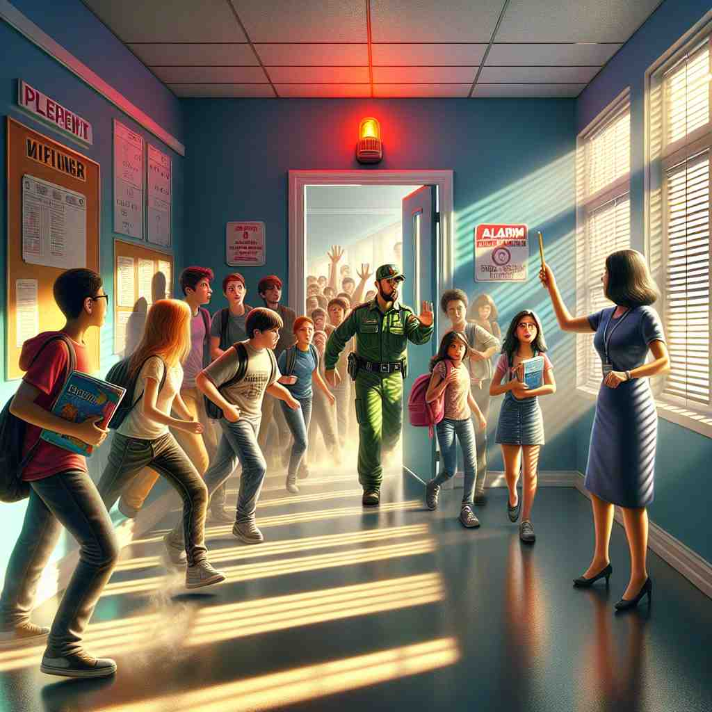

💬 The firefighter must act to save the child from danger. 消防员必须采取行动以拯救孩子于危险之中。

💬 The teacher told the students to act quickly and stay calm during the emergency. 老师告诉学生们在紧急情况下要迅速行动并保持冷静。
💬 The firefighter must act to save the child from danger. 消防员必须采取行动以拯救孩子于危险之中。
💬 The teacher told the students to act quickly and stay calm during the emergency. 老师告诉学生们在紧急情况下要迅速行动并保持冷静。
🔈 [ækt]
💬 The boy acted like a monkey, making funny faces and climbing on the furniture. 男孩模仿猴子，做鬼脸，爬家具。
🔍 扮演: 男孩假装自己是一只猴子，他学着猴子做各种动作和表情，就像你在学校表演节目时扮演小兔子一样。
💬 The medicine acts quickly to relieve the pain. 这种药能迅速缓解疼痛。
🔍 起作用: 你肚子疼，吃了药后肚子就不疼了，这表示药起作用了，就像你用抹布擦桌子，桌子变干净了，表示抹布起作用了。
💬 Don't just stand there, act! Call the fire department! 别光站着，行动！快叫消防队！
🔍 行动: 房子着火了，你需要立刻打电话叫消防队员，而不是站在那里什么也不做。就像你看到有人摔倒了，你需要跑过去扶他起来，而不是站在原地不动。
💬 In the second act of the play, the hero discovers the villain's secret. 在剧的第二幕中，主人公发现了坏人的秘密。
🔍 幕: 一部电影或戏剧通常分成好几部分，每一部分就是一个“幕”，就像一本书分成好几个章节一样。
💬 The government passed an act to protect endangered animals. 政府通过了一项法令来保护濒危动物。
🔍 法令: 政府制定了一条新的规则，规定不能捕杀濒危动物，这条规则就是一项“法令”。就像学校规定上课不能吃零食，这条规定就是学校的“法令”。
🧠 “act” 的核心意思是“做某事”或“表现得像”。它可以指扮演一个角色，指药物或其他事物产生效果，指采取行动，指戏剧或歌剧中的一部分，或者指法律或法令。
⬅️ perform（表演）、behave（表现）、function（起作用）、law（法律）、scene（场景）
🔀 inaction（不作为）、passivity（被动）、failure（失败）
🌳 词根 'act' 源自拉丁语 'agere'，意思是 '驱动，做'。在这里表示 '行动，行为'。
💡 可以将 'act' 联想为“行动”或“行为”，这样在遇到其他含有 'act' 的单词时，就能很自然地理解它们与行动相关的意思。
🗝️ v. to behave in a particular way 以特定方式行事
🎭 在一个学校操场上，几个孩子正在玩耍。其中一个小女孩总是以领导者的方式自信地引导其他人。这就是她在这种场合下表现出来的行为方式（act）。
💬 He's been acting strangely lately. 他最近行为怪异。
🤔 从"做某事"延伸到"表现某种行为"
🗝️ v. to perform in a play, film, etc. 在戏剧、电影等中进行表演。
🎭 在一个热闹的剧院里，当红演员正站在聚光灯下，深情投入地表演着一段感人的戏。台下观众屏息凝神，全神贯注于他的表演（act）。
💬 She's been acting since she was a child. 她从小就开始演戏。
🤔 在舞台上"做"某个角色的事情
🗝️ v. to pretend to be someone or something else 假装成某人或某物
🎭 在一个欢乐的化妆舞会上，一个男孩打扮成海盗，引得其他小朋友哈哈大笑。他调皮地假装（act）自己是一位船长，仿佛正在指挥一支舰队。
💬 Stop acting the fool! 别再胡闹了！
🤔 通过"做"某些事来假装成其他人或物
🗝️ n. a thing done; a deed 一种行为；一个举动
🎭 在一个温馨的社区中，居民们经常互相帮助。今天，邻居们惊讶地发现一个不留名的好心人为社区捐赠了一个新的游乐场，这真是一个美好的行为（act）。
💬 Helping others is an act of kindness. 帮助他人是一种善良的行为。
🤔 从动词"做"变为名词"所做之事"
🗝️ n. a law passed by a government 政府通过的一项法律
🎭 在华丽的议会大厅里，经过数周的辩论和修改，议员们终于通过了一项新法案（act），这项法律将改善全国的教育系统。
💬 The Clean Air Act was passed in 1963. 清洁空气法案于1963年通过。
🤔 政府"所做"的决定成为法律
🗝️ n. a main division of a play or opera 戏剧或歌剧的主要部分
🎭 在一个古老的歌剧院，观众们聚集在一起观看一场经典表演。当第一幕（act）结束时，整个大厅响起了热烈的掌声。
💬 The play is divided into three acts. 该剧分为三个幕。
🤔 戏剧中的一个主要"行动"部分